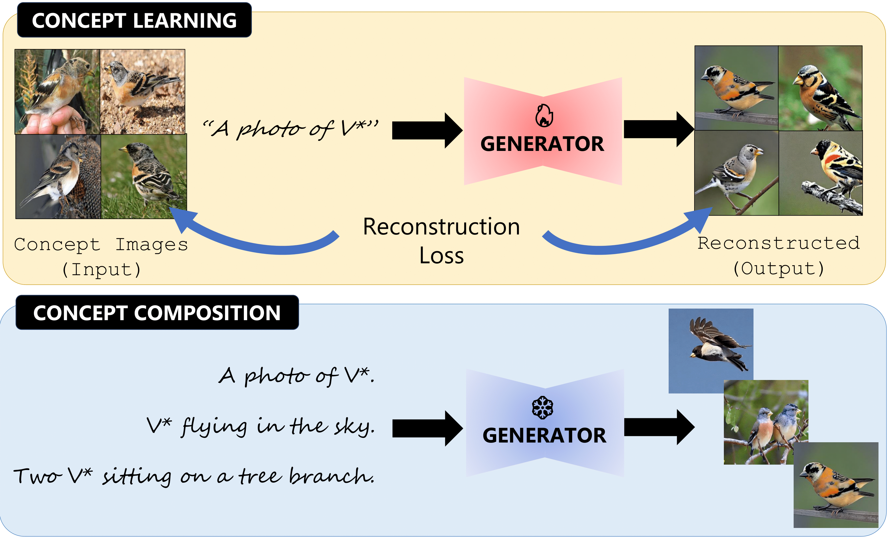

Rethinking Multi-Concept Customization for Text-To-Image Diffusion Models
Despite the recent advances in personalized text-to-image (P-T2I) generative models, subject-driven T2I
remains challenging.
The primary bottlenecks include
1) Intensive training resource requirements,
2) Hyper-parameter sensitivity leading to inconsistent outputs, and
3) Balancing the intricacies of novel visual concept and composition alignment.
We start by re-iterating the core philosophy of T2I diffusion models to address the above limitations.
Predominantly, contemporary subject-driven T2I approaches hinge on Latent Diffusion Models (LDMs), which
facilitate T2I mapping through cross-attention layers.
While LDMs offer distinct advantages, P-T2I methods' reliance on the latent space of these diffusion
models significantly escalates resource demands, leading to inconsistent results and necessitating
numerous iterations for a single desired image.
Recently, ECLIPSE has demonstrated a more resource-efficient
pathway for training UnCLIP-based T2I models,
circumventing the need for diffusion text-to-image priors.
Building on this, we introduce Subject-ECLIPSE.
Our method illustrates that effective P-T2I does not necessarily depend on the latent space of diffusion
models.
Subject-ECLIPSE achieves single, multi-subject, and edge-guided
T2I personalization with just 34M parameters and is trained on a mere 74 GPU hours using 1.6M image-text
interleaved data.
Through extensive experiments, we also establish that Subject-ECLIPSE surpasses existing baselines in composition
alignment while preserving concept alignment performance, even with significantly lower resource
utilization.

Weight Modulation for User Attribution and Fingerprinting in T2I Models.
Evaluating Concept Learning Abilities of T2I Models